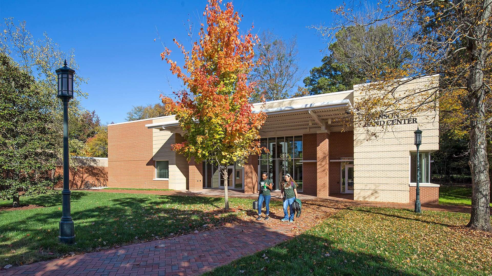
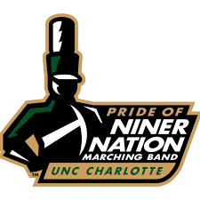

About Us:
The Pride of Niner Nation Marching Band was founded in the year 2015 with the help of donations by Gene and Vicki Johnson, who thought that Charlotte's new football team would be incomplete without a marching band. The Pride of Niner Nation Marching Band (PNNMB) is the largest spirit organization at UNC Charlotte, and performs at football games, basketball games, campus events, other sporting events, and local events.
My Favorite Moments:
Over my time with the band, some of my favorite moments include:
- 2023 Florida Trip - Florida vs. UNC Charlotte Football Game
- ECU vs. UNC Charlotte 2024 - Score: 55-24. I love beating ECU.
- LA Tech vs. UNC Charlotte 2022 - First home win!
- South Carolina vs. UNC Charlotte 2022 - First trip!
- ECU vs. UNC Charlotte 2023 - Again, I love beating ECU!
My Favorite Performances:
Linked below are videos to some of my favorite performances that I have been a part of:
Why PNNMB?
If you're not absolutely insane or never done band before, you're probably thinking, why even do this? The main two reasons I do it are because of the people, and at the end of my work I can be proud of the awesome performances that we put on. We did a total of 6 shows last year, and we worked our tails off to be able to do so. I will be able to look back on these years and be proud, and feel like I contributed something.
Hear some member testimonies on their experience in the band so far:
How we practice:
Every Monday, Wednesday, and Friday during the fall semester we practice on a field near Levine Hall from 4:15-6:15 PM. In the span of these two hours, we do anything from practice music, to go over drill we have already learned, to learning new drill. Before the school year, we have a week long band camp where days span from 8AM to 8PM. These days are usually spent outside in the hot August sun, and by the end of the week you are absolutely exhausted, but it's some of the most fun I've ever had.
Below is a documentary about our 2023 band camp:
AI Prompts Used:
- Using CSS, HTML, and JavaScript what give me a solution using section elements and a nav bar to where if one section is clicked, it shows only that section and the rest are hidden from view.
- What are some suggested improvements to my css code to help make it look nicer?
- Please help find any bugs or oversights in this code that could lead to any problems when publishing.
- No AI images were used, all were sourced from the PNNMB flickr which is made available to members.